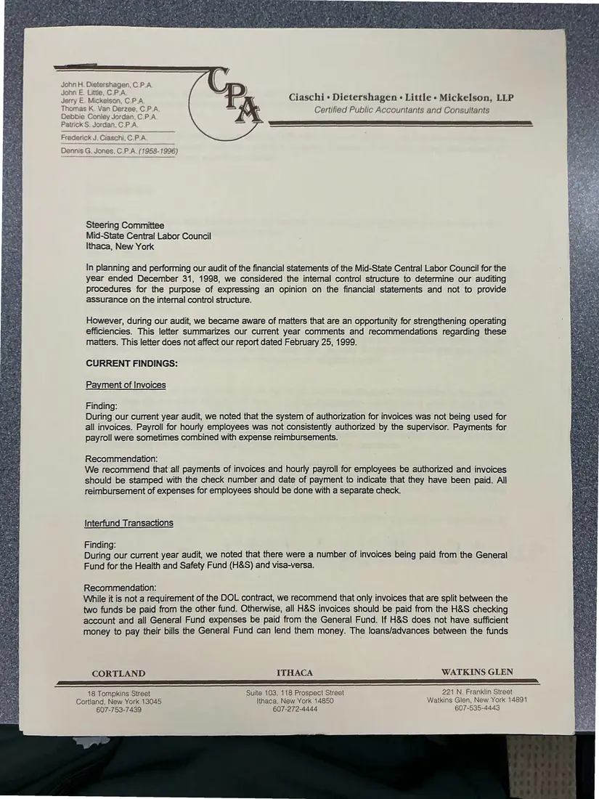
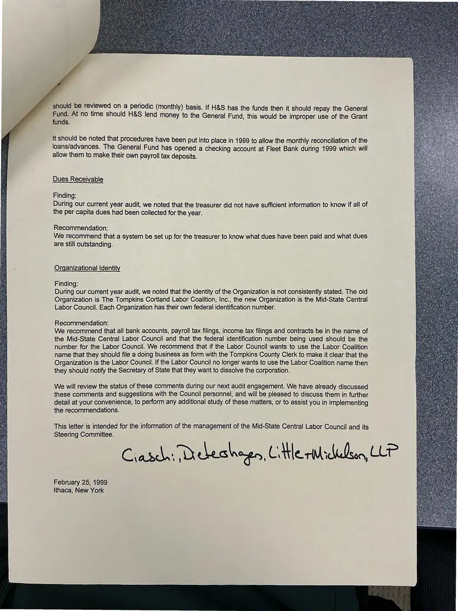

Letter, 2 pages
Auditors' management letter to the Steering Committee
February 25, 1999
Following the 1998 audit, the auditors report on internal-control findings and recommendations for the Midstate Central Labor Council's accounting procedures. Page 2 precedes page 1 in the source and is shown in reading order.
Download or cite this itemPages


(open zoom view)Read the page text (machine-read, mostly readable)
This text was generated automatically from the photograph and has not been corrected. The image is the authoritative record.
John H. Dietershagen, C.P.A John E. Little, C.P_A Jerry E. Mickelson, C.P.A Thomas K. Van Derzee, C.P_A Debbie Coniey Jordan, C.P.A Patrick S. Jordan, C.P_A Frederick J. Ciaschi, C P A. Dennis G. Jones, C.P.A. (1958-1996) Ciaschi + Dietershagen « Little - Mickelson, LLP Certified Public Accountants and Consultants a a a LE ee Steering Committee Mid-State Central Labor Council Ithaca, New York In planning and performing our audit of the financial statements of the Mid-State Central Labor Council for the year ended December 31, 1998, we considered the internal control structure to determine our auditing procedures for the purpose of expressing an opinion on the financial statements and not to provide assurance on the internal control structure. However, during our audit, we became aware of matters that are an opportunity for strengthening operating efficiencies. This letter summarizes our current year comments and recommendations regarding these matters. This letter does not affect our report dated February 25, 1999. CURRENT FINDINGS: Payment of Invoices : : Zz Finding: = During our current year audit, we noted that the system of authorization for invoices was not being used for all invoices. Payroll for hourly employees was not consistently authorized by the supervisor. Payments for payroll were sometimes combined with expense reimbursements. Recommendation: We recommend that all payments of invoices and hourly payroll for employees be authorized and invoices should be stamped with the check number and date of payment to indicate that they have been paid. All reimbursement of expenses for employees should be done with a separate check. Interfund Transactions a Finding: Bie During our current year audit, we noted that there were a number of invoices being paid from the General Fund for the Health and Safety Fund (H&S) and visa-versa. Efe Recommendation: Bos While it is not a requirement of the DOL contract, we recommend that only invoices that are split between the x two funds be paid from the other fund. Otherwise, all H&S invoices should be paid from the H&S checking Eas) account and all General Fund expenses be paid from the General Fund. If H&S does not have sufficient ws money to pay their bills the General Fund can lend them money. The loans/advances between the funds CORTLAND ITHACA WATKINS GLEN nee eR eR a a I 18 Tompkins Street Suite 103, 118 Prospect Street 221 N. Franklin Street Cortland, New York 13045 Ithaca, New York 14850 Watkins Glen, New York 14891 607-753-7439 607-272-4444 607-535-4443


(open zoom view)Read the page text (machine-read, mostly readable)
This text was generated automatically from the photograph and has not been corrected. The image is the authoritative record.
should be reviewed on a periodic (monthly) basis. If H&S has the funds then it should repay the General ae At no time should H&S lend money to the General Fund, this would be improper use of the Grant nds. It should be noted that procedures have been put into place in 1999 to allow the monthly reconciliation of the loans/advances. The General Fund has opened a checking account at Fleet Bank during 1999 which will allow them to make their own payroll tax deposits. Dues Receivable Finding: During our current year audit, we noted that the treasurer did not have sufficient information to know if all of the per capita dues had been collected for the year. Recommendation: We recommend that a system be set up for the treasurer to know what dues have been paid and what dues are still outstanding. Organizational Identity Finding: During our current year audit, we noted that the identity of the Organization is not consistently stated. The old Organization is The Tompkins Cortland Labor Coalition, Inc., the new Organization is the Mid-State Central Labor Council. Each Organization has their own federal identification number. Recommendation: We recommend that all bank accounts, payroll tax filings, income tax filings and contracts be in the name of the Mid-State Central Labor Council and that the federal identification number being used should be the number for the Labor Council. We recommend that if the Labor Council wants to use the Labor Coalition name that they should file a doing business as form with the Tompkins County Clerk to make it clear that the Organization is the Labor Council. If the Labor Council no longer wants to use the Labor Coalition name then they should notify the Secretary of State that they want to dissolve the corporation. We will review the status of these comments during our next audit engagement. We have already discussed these comments and suggestions with the Council personnel, and will be pleased to discuss them in further detail at your convenience, to perform any additional study of these matters, or to assist you in implementing the recommendations. This letter is intended for the information of the management of the Mid-State Central Labor Council and its Steering Committee. Ciaddar Dekesheen, Citle ridhllsan, CLP February 25, 1999 Ithaca, New York
See something wrong, or recognize a person or event? Send a correction. If you hold rights in this item or think it should not be public, write to the same address.